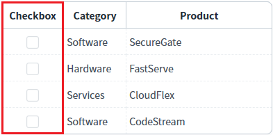
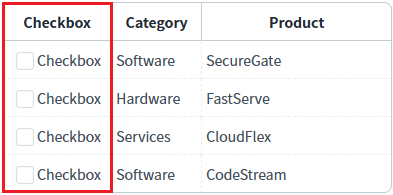
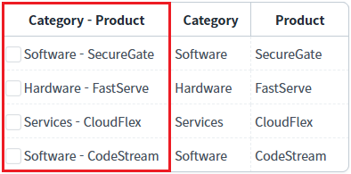
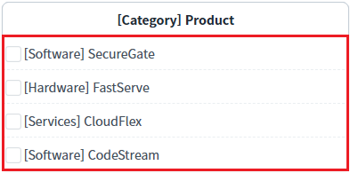
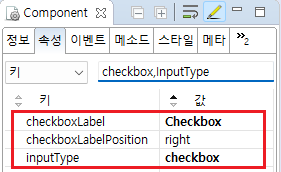
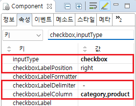
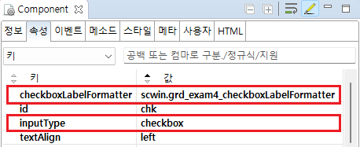

GridView 바디 컬럼의 'inputType' 속성이 'checkbox'일 때, 'label'을 함께 표시하는 예제입니다. 설정에 통해 고정 문자 또는 GridView의 컬럼 데이터를 조합하여 표시할 수 있습니다. 기본 동작은 'checkbox'만 표시됩니다.
(기본 설정) label 설정 없음
고정된 문자열로 checkbox의 label 출력하기
GridView의 컬럼의 값을 조합하여 checkbox의 label 출력하기
사용자 메소드를 통해 checkbox의 label 출력하기
각 GridView의 첫번째 컬럼에 checkbox를 설정하였습니다. 출력된 chekbox의 label을 비교합니다.
1
실행결과 확인하기
영역 '(기본 설정) label 설정 없음'의 GridView를 확인합니다
GridView의 컬럼의 inputType을 checkbox로 설정한 예시입니다.
바디 컬럼에 checkbox만 출력됩니다.Image 1.브라우저(Chrome) 실행 예시

1
실행결과 확인하기
영역 'checkbox의 label - 고정 문자'의 GridView를 확인합니다
GridView 바디 컬럼의 inputType을 checkbox로 설정하고 고정된 문자열 "Checkbox"을 label로 출력한 예시입니다.Image 2.브라우저(Chrome) 실행 예시

1
실행결과 확인하기
영역 'checkbox의 label 적용 - 컬럼 조합'의 GridView를 확인합니다
GridView 바디 컬럼의 inputType을 checkbox로 설정하고 GridView의 컬럼 "Category"와 "Product"의 데이터를 label로 출력한 예시입니다.Image 3.브라우저(Chrome) 실행 예시

1
실행결과 확인하기
영역 'checkbox의 label 적용 - 사용자 메소드 적용'의 GridView를 확인합니다
GridView 바디 컬럼의 inputType을 checkbox로 설정하고 사용자 메소드를 통해 생성된 label을 출력한 예시입니다.
Image 4.브라우저(Chrome) 실행 예시

DataList 생성 및 연결은 생략되었습니다.
1
GridView 바디 컬럼의 속성을 설정합니다.
[필수] inputType="checkbox"
[필수] checkboxLabel="설정 값"
inputType="checkbox"인 경우 label을 표시하기 위한 속성
예시) checkboxLabel="Checkbox"
Image 5.웹스퀘어 스튜디오의 Component View - 바디 컬럼 속성 설정 예시

Example 1.Source
<!-- gridView 의 소스 본문 예시 --> <w2:gridView dataList="data:dlt_exam_2"> <!-- 중략 --> <w2:gBody id="gBody1"> <w2:row id="row2"> <w2:column inputType="checkbox" checkboxLabel="Checkbox" id="chk"></w2:column> <!-- 중략 --> </w2:row> </w2:gBody> </w2:gridView>
1
GridView 바디 컬럼의 속성을 설정합니다.
[필수] inputType="checkbox"
[필수] checkboxLabelColumn="컬럼 ID"
inputType="checkbox"인 컬럼의 경우 다른 컬럼의 정보를 조합하여 해당 컬럼의 label을 생성
예시) checkboxLabelColumn="categoryLabel,label"
[선택] checkboxLabelDelimiter="구분자"
컬럼 데이터 간의 구분자
예시) checkboxLabelDelimiter=" - "
Image 6.웹스퀘어 스튜디오의 Component View - 바디 컬럼 속성 설정 예시

Example 2.Source
<!-- gridView 의 소스 본문 예시 --> <w2:gridView dataList="data:dlt_exam_4"> <!-- 중략 --> <w2:gBody id="gBody1"> <w2:row id="row2"> <w2:column inputType="checkbox" checkboxLabelColumn="category,product" checkboxLabelDelimiter=" - " id="chk"> </w2:column> <!-- 중략 --> </w2:row> </w2:gBody> </w2:gridView>
1
STEP 1: 바디 컬럼의 속성을 설정합니다.
[필수] inputType="checkbox"
[필수] checkboxLabelFormatter="메소드명"
inputType="checkbox"인 경우 Checkbox 버튼의 label로 표시할 값으로의 변환을 수행하는 메소드 이름
예시) checkboxLabelFormatter="scwin.grd_exam4_checkboxLabelFormatter"
Image 7.웹스퀘어 스튜디오의 Component View - 바디 컬럼 속성 설정 예시

2
STEP 2: 사용자 메소드를 정의합니다.
'checkboxLabelFormatter' 속성에 설정한 메소드를 정의합니다.
Example 3.Script
/** * 영역 [checkbox의 label 적용 - 사용자 메소드 적용]의 checkboxLabelFormatter */ scwin.grd_exam4_checkboxLabelFormatter = function (row, col, label) { // DataList 'dlt_exam_4'에서 현재 행의 JSON 데이터 추출 let jsnRow = dlt_exam_4.getRowJSON(row); let returnValue = "[" + jsnRow.category + "] " + jsnRow.product; return returnValue; };
checkboxLabel
checkboxLabelColumn
checkboxLabelDelimiter
checkboxLabelFormatter